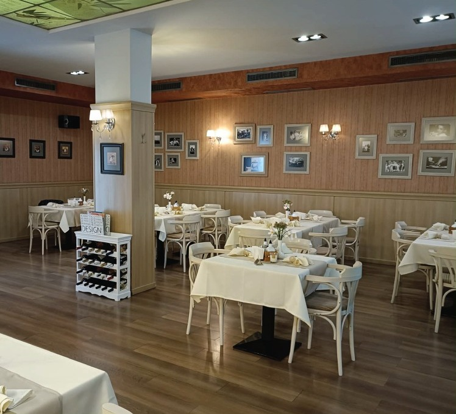
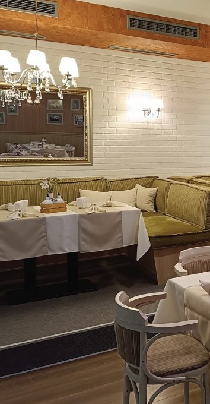
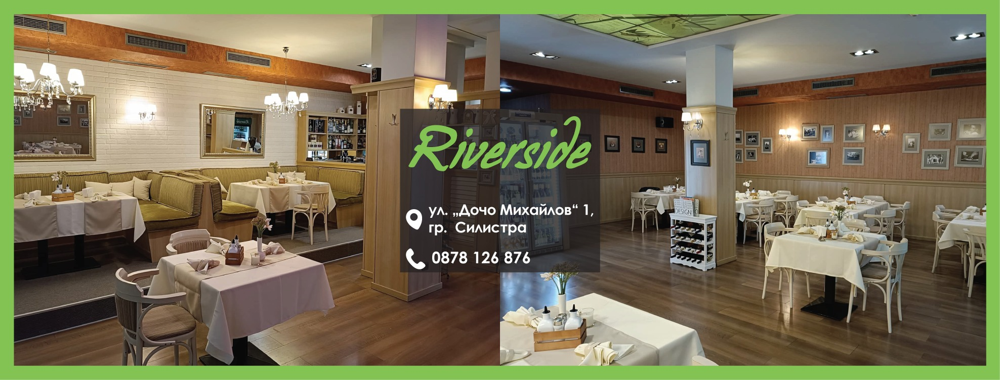

Вкусът на Силистра, на брега на реката.
Riverside е изискан ресторант в самото сърце на града — домашна българска и европейска кухня, свежо обедно меню всеки ден и топла зала за вашите поводи.
Уютно място за хубава храна в центъра на Силистра.
Riverside е изискан ресторант в самото сърце на Силистра, на ул. „Дочо Михайлов“ 1 — на крачка от крайдунавския парк и Историческия музей. В топла, елегантна зала с бели покривки предлагаме домашно приготвена българска и европейска кухня.
Всеки делник подготвяме свежо обедно меню — супа, основно ястие и десерт на достъпни цени, сготвени от пресни сезонни продукти. От таратор и шопска салата до ястия на фурна, паста и апетитни десерти — има от какво да избирате.
Заповядайте на обяд с колеги, на вечеря със семейството или за по-голям повод — имаме залата и кухнята за вашата хубава вечер.

Повече от един обяд
Три причини гостите на Силистра да се връщат при нас.
Домашна кухня
Ястия, приготвени всеки ден на място — от таратор и супи до основни на фурна, пълнени зеленчуци и класики от българската трапеза.
Обедно меню всеки ден
Свежо, сменящо се меню за обяд на достъпни цени — супа, основно ястие и десерт, идеални за бърза и вкусна пауза в работния ден.
Зала за поводи
Елегантна зала в центъра — подходяща за рождени дни, семейни събирания и фирмени обеди. Обадете се и ще подготвим всичко за вас.
Погледнете в залата ни
Топлата, елегантна атмосфера, която ви очаква в Riverside.

Нашият интериор4,1 от 5 звезди
Над 430 мнения в Restaurant Guru. Ето какво споделят гостите ни.
„Приятна атмосфера и внимателно обслужване. Персоналът е търпелив, а храната пристига бързо.“
„Хубаво приготвени бургери и топла обстановка — човек се чувства спокойно и добре дошъл.“
„Изискан ресторант в центъра на Силистра — уютна обстановка и отлична кухня.“